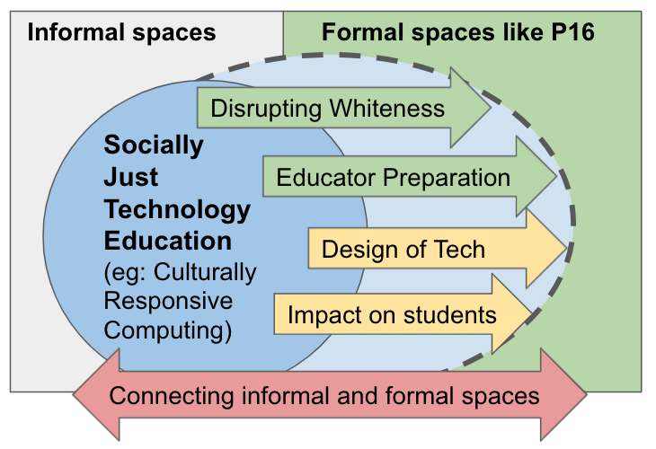

Hi Everyone! My name is Sukanya Moudgalya. I am a Doctoral Candidate (ABD) in the Educational Psychology and Educational Technology program at Michigan State University. I am an educational researcher focusing on socially-just Computer Science (CS) and technology education. Socially-just Computer Science and Technology education (like Culturally Responsive Computing) has mostly been researched in informal contexts. I aim to extend the research in formal P-16 (Kindergarten to Undergraduate degrees) contexts by (1) studying teacher preparation, (2) disrupting whiteness in CS and tech-fields, (3) designing tech-tools meant for civic participation, (4) studying the impact of anti-racist technology education on youth, and (5) connecting informal and formal spaces of learning anti-racist technologies.
Click here for a PDF version of my CV
As a part of the IntroCS POGIL Project, I was primarily interested exploring students’ sense of belonging in CS due to the effects of teamwork in their introductory CS courses. I explored the validity of a large-scale instrument that measured students’ sense of belonging in CS using factor analyses and correlations. I also researched the survey’s validity in different learning contexts and among various student groups. In my paper at SIGCSE ’21 technical symposium, I proposed and encouraged researchers to consider the nuances of using quantitative surveys and predictive models, especially when researching sense of belonging for minoritized Black, Indigenous, and People of Color (BIPOC) students in CS.
CS Educators Stack Exchange and Gender Equity I researched how educators explored gender and CS in an Q&A forum. I used educator questions and answers, then thematically analyzed ways in which they envivisoned women’s roles incomputing fields. I also explored ways of their communication and sharing praactices using social network analysis. This project lead to publications and presentations in several venues such as AERA, AECT, SIGCSE, and SITE.
Computational Thinking and Equity: I helped conduct workshops for a diverse group of New York City pre-service and in-service K-5 teachers (from ELA, Social Sciences, Science, and Math) to help them integrate Computational Think-ing (CT) in their classrooms. I was especially interested in exploring if exposure to inclusive practices, and to CT as a whole, helped teachers better negotiate questions like “who can be a computer scientist?”. My involvement in this project lead to a paper in the ITiCSE conference.
Teachers’ thoughts on Culturally Responsive Computing: I interviewed High-School CS teachers and helped conduct a summer professional development workshop. Through these initial data sources, I began exploring if conditions of whiteness shape White high-school CS teachers' ideas of culture, community, and cultural responsivity. I analyzed the teacher interviews using qualitative coding techniques such as values coding, in-vivo coding, and codeweaving. I wrote an article that is under review in the Journal of Teacher Education
I have been an Instructor and Teaching Assisstant at Michigan State University for several semesters. Please see below a list of courses that I have taught.